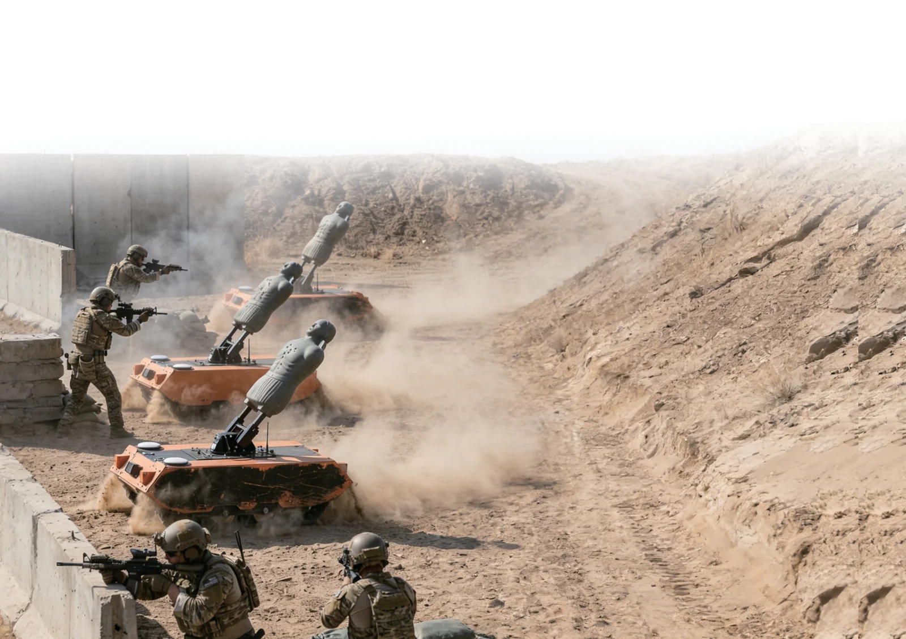
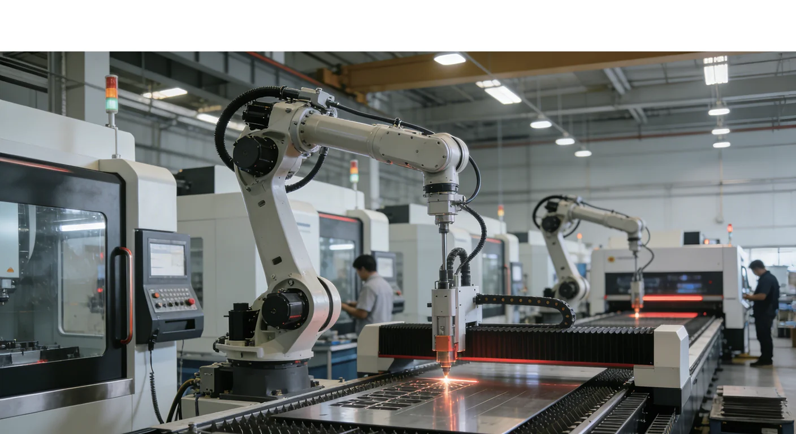

Prepare
Set the objectives, participants, and scenario for the exercise.
 Request a briefing
Request a briefing
Tactical training and exercise review
MIPES brings simulated engagements, participant activity, and exercise review into one connected training experience.

Effective training asks more than whether an engagement occurred. Instructors need context: how participants moved, how the exercise developed, and what decisions led to the result.
MIPES is designed to bring those perspectives together, helping teams turn exercise activity into focused feedback.
MIPES connects key elements of the training environment so instructors can follow the activity and review it with purpose.
Set the objectives, participants, and scenario for the exercise.
Bring participants and selected platforms into the training environment.
Follow engagement events and participant activity as the scenario unfolds.
Use the recorded activity to discuss decisions, movement, and outcomes.
Distinct capabilities work together to support a more complete training experience. The right configuration depends on your objectives and environment.

A coordinated approach to tactical simulation, exercise visibility, and after-action review.

Mobile target systems that add movement and adaptability to selected training scenarios.

Supporting devices that help shape exercises around specific training needs.
An engagement result tells instructors what happened. MIPES is designed to add context around how participants moved and positioned themselves during an exercise, giving instructors a fuller basis for feedback and review.
Explore the training approach
MIPES brings together equipment, exercise oversight, and review in a modular approach. We work from the training objective to identify a suitable configuration for each programme.
Tell us what you are preparing for, who will train, and what you want instructors to learn. A private briefing can explore the right MIPES configuration in more detail.